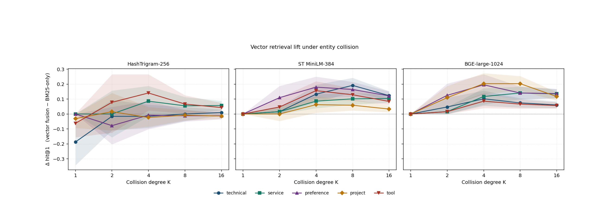

Entity-Collision: A Stratified Protocol for Attributing Retrieval Lift in Agent Memory 精读笔记
这篇论文讨论的是 面向 Agent 记忆检索归因的实体碰撞协议。作者为 Youwang Deng；一作主机构口径：Independent Researcher。论文入口：arXiv:2605.29630。公开日期为 2026-05-28，来源为 arXiv v1 / cs.CL/cs.IR。代码/项目页状态：论文首页给出 youwangd/engram 代码、benchmark 和复现脚本入口，本轮核验到 PDF 声明，未运行脚本。 主类别：LLM；次级标签：Agent memory、检索评测、BM25 floor、embedding attribution。
1. 背景和问题
补充背景 1：Entity-Collision 需要放在近期论文池的共同变化里理解。过去一周的候选不再只展示更大的模型或更长的上下文，而是在追问 BM25 floor、tag 分层、paired bootstrap 这些中间变量怎样被量化、怎样被训练、怎样进入服务路径。这个角度对读者很重要，因为推荐系统和大模型的实际收益往往不是由一个最终分数决定，而是由数据接口、缓存策略、评测分桶和失败回滚共同决定。Agent 记忆检索归因 在这里承担的是一个可复核样本：它把原先会被平均指标吞掉的细节放到实验中心。
补充背景 2：Entity-Collision 需要放在近期论文池的共同变化里理解。过去一周的候选不再只展示更大的模型或更长的上下文，而是在追问 BM25 floor、tag 分层、paired bootstrap 这些中间变量怎样被量化、怎样被训练、怎样进入服务路径。这个角度对读者很重要，因为推荐系统和大模型的实际收益往往不是由一个最终分数决定，而是由数据接口、缓存策略、评测分桶和失败回滚共同决定。Agent 记忆检索归因 在这里承担的是一个可复核样本：它把原先会被平均指标吞掉的细节放到实验中心。
补充背景 3：Entity-Collision 需要放在近期论文池的共同变化里理解。过去一周的候选不再只展示更大的模型或更长的上下文，而是在追问 BM25 floor、tag 分层、paired bootstrap 这些中间变量怎样被量化、怎样被训练、怎样进入服务路径。这个角度对读者很重要，因为推荐系统和大模型的实际收益往往不是由一个最终分数决定，而是由数据接口、缓存策略、评测分桶和失败回滚共同决定。Agent 记忆检索归因 在这里承担的是一个可复核样本：它把原先会被平均指标吞掉的细节放到实验中心。
补充背景 4：Entity-Collision 需要放在近期论文池的共同变化里理解。过去一周的候选不再只展示更大的模型或更长的上下文，而是在追问 BM25 floor、tag 分层、paired bootstrap 这些中间变量怎样被量化、怎样被训练、怎样进入服务路径。这个角度对读者很重要，因为推荐系统和大模型的实际收益往往不是由一个最终分数决定，而是由数据接口、缓存策略、评测分桶和失败回滚共同决定。Agent 记忆检索归因 在这里承担的是一个可复核样本：它把原先会被平均指标吞掉的细节放到实验中心。
补充背景 5：Entity-Collision 需要放在近期论文池的共同变化里理解。过去一周的候选不再只展示更大的模型或更长的上下文，而是在追问 BM25 floor、tag 分层、paired bootstrap 这些中间变量怎样被量化、怎样被训练、怎样进入服务路径。这个角度对读者很重要，因为推荐系统和大模型的实际收益往往不是由一个最终分数决定，而是由数据接口、缓存策略、评测分桶和失败回滚共同决定。Agent 记忆检索归因 在这里承担的是一个可复核样本：它把原先会被平均指标吞掉的细节放到实验中心。
Entity-Collision 的问题起点是：许多 agent memory benchmark 只给一个 hit@k，无法区分 BM25 靠实体词赢、dense encoder 真有语义 lift，还是不同 memory tag 被平均掩盖。 这类问题在近期论文池里反复出现，说明推荐系统和大模型都开始从单点模型精度转向对中间状态、训练信号和系统接口的治理。今天把它列入精选，不是因为标题里有热门词，而是因为它把一个容易被平均指标掩盖的环节重新拆开，并给出可复核的实验或系统设计。
它值得看的原因可以用一句话概括：它把 agent memory 检索评测中的 lexical leakage 和 tag mixing 拆开，用所有 distractor 共享实体 token 的方式固定 BM25 下限，重新归因 dense embedder 的真实增益。 如果只读摘要，容易把这篇论文归入已有路线；但从工程角度看，作者关心的是怎样让该路线在真实系统里可测、可控、可迁移。这样的论文通常比单纯刷新 leaderboard 更适合每日沉淀，因为它能改变后续读论文时的检查清单。
从大模型方向看，Entity-Collision 关联的是训练后治理、记忆、检索、评价或旁路预测这些“主模型之外”的能力。现代 LLM 系统已经很少是一个模型独立完成任务，RAG、Agent memory、verifier、feature service 和 offline teacher 都会改变最终输出。论文把这些外围组件当成主要研究对象，因此对实际应用比表面任务更重要。
从推荐系统方向看，Entity-Collision 的意义在于提醒我们不要把推荐链路简化成一个分数。召回、排序、重排、广告候选、用户历史和长期偏好都可能需要不同的监督强度和不同的服务成本。论文提供的机制可以帮助判断哪些能力应在线调用，哪些应离线蒸馏，哪些应转成特征或评测协议。
本轮阅读只使用 arXiv 摘要页、PDF 正文和 PDF 中可见链接作为事实源。具体数值若没有逐项表格复核，后文只按论文报告的相对结论描述，不把未核验数字扩写成业务事实。这条线对大模型工程的价值，更多体现在把不可见的中间状态变成可测对象：参数记忆容量、RAG 批评质量、记忆检索归因都不是最终答案准确率能完整表达的变量。 这也是今天筛选时优先保留它的原因。
2. 方法
方法加深 1：Entity-Collision 在复现时还需要把 agent memory 检索归因 拆成日志字段和训练批次两个层面。日志字段决定我们能否观察到论文中的中间变量，例如置信度、历史表征、诊断位置或候选实体碰撞；训练批次决定这些变量是否以正确分布进入优化。如果字段定义不稳定，模型可能在离线指标上学习到短期捷径；如果批次构造和线上请求差异太大，论文里的模块即使数学上成立，也会在 serving 阶段变成不可解释噪声。因此我会把数据生成、损失权重、在线使用点和失败回滚四件事绑定检查，而不是只检查模型代码是否能跑通。
方法加深 2：Entity-Collision 在复现时还需要把 agent memory 检索归因 拆成日志字段和训练批次两个层面。日志字段决定我们能否观察到论文中的中间变量，例如置信度、历史表征、诊断位置或候选实体碰撞；训练批次决定这些变量是否以正确分布进入优化。如果字段定义不稳定，模型可能在离线指标上学习到短期捷径；如果批次构造和线上请求差异太大，论文里的模块即使数学上成立，也会在 serving 阶段变成不可解释噪声。因此我会把数据生成、损失权重、在线使用点和失败回滚四件事绑定检查，而不是只检查模型代码是否能跑通。
方法加深 3：Entity-Collision 在复现时还需要把 agent memory 检索归因 拆成日志字段和训练批次两个层面。日志字段决定我们能否观察到论文中的中间变量，例如置信度、历史表征、诊断位置或候选实体碰撞；训练批次决定这些变量是否以正确分布进入优化。如果字段定义不稳定，模型可能在离线指标上学习到短期捷径；如果批次构造和线上请求差异太大，论文里的模块即使数学上成立，也会在 serving 阶段变成不可解释噪声。因此我会把数据生成、损失权重、在线使用点和失败回滚四件事绑定检查，而不是只检查模型代码是否能跑通。
方法加深 4：Entity-Collision 在复现时还需要把 agent memory 检索归因 拆成日志字段和训练批次两个层面。日志字段决定我们能否观察到论文中的中间变量，例如置信度、历史表征、诊断位置或候选实体碰撞；训练批次决定这些变量是否以正确分布进入优化。如果字段定义不稳定，模型可能在离线指标上学习到短期捷径；如果批次构造和线上请求差异太大，论文里的模块即使数学上成立，也会在 serving 阶段变成不可解释噪声。因此我会把数据生成、损失权重、在线使用点和失败回滚四件事绑定检查，而不是只检查模型代码是否能跑通。
方法补充 1：阅读 Entity-Collision 时，我会把 BM25 floor、tag 分层、paired bootstrap 当作一组连续接口，而不是互不相干的技巧。第一个检查点是数据是否足够稳定：如果输入来自曝光日志、用户历史、检索结果或模型中间层，那么采样策略会直接决定训练信号。第二个检查点是目标是否可校准：如果模型只优化最终标签，就很难解释错误来自哪里；如果论文同时记录中间变量，就可以把收益拆到模块级。第三个检查点是服务成本：训练期可用的 teacher、future trajectory 或评测协议，未必能进入线上主链路，因此必须看作者是否提供了离线化、缓存化或旁路接入路径。
方法补充 2：阅读 Entity-Collision 时，我会把 BM25 floor、tag 分层、paired bootstrap 当作一组连续接口，而不是互不相干的技巧。第一个检查点是数据是否足够稳定：如果输入来自曝光日志、用户历史、检索结果或模型中间层，那么采样策略会直接决定训练信号。第二个检查点是目标是否可校准：如果模型只优化最终标签，就很难解释错误来自哪里；如果论文同时记录中间变量，就可以把收益拆到模块级。第三个检查点是服务成本：训练期可用的 teacher、future trajectory 或评测协议，未必能进入线上主链路，因此必须看作者是否提供了离线化、缓存化或旁路接入路径。
方法补充 3：阅读 Entity-Collision 时，我会把 BM25 floor、tag 分层、paired bootstrap 当作一组连续接口，而不是互不相干的技巧。第一个检查点是数据是否足够稳定：如果输入来自曝光日志、用户历史、检索结果或模型中间层，那么采样策略会直接决定训练信号。第二个检查点是目标是否可校准：如果模型只优化最终标签，就很难解释错误来自哪里；如果论文同时记录中间变量，就可以把收益拆到模块级。第三个检查点是服务成本：训练期可用的 teacher、future trajectory 或评测协议，未必能进入线上主链路，因此必须看作者是否提供了离线化、缓存化或旁路接入路径。
方法补充 4：阅读 Entity-Collision 时，我会把 BM25 floor、tag 分层、paired bootstrap 当作一组连续接口，而不是互不相干的技巧。第一个检查点是数据是否足够稳定：如果输入来自曝光日志、用户历史、检索结果或模型中间层，那么采样策略会直接决定训练信号。第二个检查点是目标是否可校准：如果模型只优化最终标签，就很难解释错误来自哪里；如果论文同时记录中间变量，就可以把收益拆到模块级。第三个检查点是服务成本：训练期可用的 teacher、future trajectory 或评测协议，未必能进入线上主链路，因此必须看作者是否提供了离线化、缓存化或旁路接入路径。
方法补充 5：阅读 Entity-Collision 时，我会把 BM25 floor、tag 分层、paired bootstrap 当作一组连续接口，而不是互不相干的技巧。第一个检查点是数据是否足够稳定：如果输入来自曝光日志、用户历史、检索结果或模型中间层，那么采样策略会直接决定训练信号。第二个检查点是目标是否可校准：如果模型只优化最终标签，就很难解释错误来自哪里；如果论文同时记录中间变量，就可以把收益拆到模块级。第三个检查点是服务成本：训练期可用的 teacher、future trajectory 或评测协议，未必能进入线上主链路，因此必须看作者是否提供了离线化、缓存化或旁路接入路径。
方法补充 6：阅读 Entity-Collision 时，我会把 BM25 floor、tag 分层、paired bootstrap 当作一组连续接口，而不是互不相干的技巧。第一个检查点是数据是否足够稳定：如果输入来自曝光日志、用户历史、检索结果或模型中间层，那么采样策略会直接决定训练信号。第二个检查点是目标是否可校准：如果模型只优化最终标签，就很难解释错误来自哪里；如果论文同时记录中间变量，就可以把收益拆到模块级。第三个检查点是服务成本：训练期可用的 teacher、future trajectory 或评测协议，未必能进入线上主链路，因此必须看作者是否提供了离线化、缓存化或旁路接入路径。
方法部分按论文原始思路拆成 4 个模块。为了避免把论文读成一个新名词，下面每个模块都说明输入、输出、训练或推理时的位置，以及它怎样缓解前文的问题。Entity-Collision 的方法不应只看最终指标，必须把数据、损失、服务路径和评测假设放在一起读。
2.1 entity-collision 构造：固定实体词重合的候选组
entity-collision 构造：固定实体词重合的候选组 是论文方法链条中的第 1 个关键环节。它的输入来自前一阶段定义的用户上下文、模型状态、候选集合或训练样本，输出则会继续影响后续优化和评测。这里最重要的不是模块名称，而是接口：如果输入里包含有偏曝光、过期知识或未校准置信度，后续模块即使形式上复杂，也可能只是在放大旧问题。
训练视角下，entity-collision 构造：固定实体词重合的候选组 需要把原始信号转成可学习对象。对 Entity-Collision 来说，作者没有满足于最终分数，而是显式控制了该模块需要学习的中间变量：可能是 rank、历史表征、future step、diagnostic field、entity collision degree，或 advertiser prediction prior。这让实验能回答“收益来自哪里”，而不是只回答“模型有没有更高”。
推理或服务视角下，entity-collision 构造：固定实体词重合的候选组 的代价同样需要单独看。有些组件只存在于训练期，可以承受较高成本；有些组件会进入在线路径，就必须面对延迟、缓存、增量更新和异常回退。论文的工程价值，正在于它尽量把高成本推理转成离线表征、训练奖励、评测协议或轻量旁路特征，使系统可以先小范围接入再扩大。

Figure 1 是全文最核心的证据锚点，因为它把 dense retrieval 的增益放在实体词完全碰撞的条件下重新计算。Figure 1: Entity-collision ∆hit@1 vs K, by tag × embedder, paired 95% CI bands 读图时不要只看哪个 embedder 平均最高，而要看 tag 与 collision degree 的交互：某些标签依赖闭集词项，某些标签依赖意图语义，BM25 floor 被固定后，embedding 的真实贡献才会浮出来。这个图对 agent memory 和推荐召回都很有启发，它要求评测先消除词项泄漏，再谈向量模型容量。
这个模块的边界也很清楚。entity-collision 构造：固定实体词重合的候选组 如果被孤立使用，可能只是一项局部技巧；只有和后续模块结合，才能形成论文声称的整体收益。阅读 Entity-Collision 时，我会特别检查它是否依赖不可公开的数据、是否要求昂贵 teacher、是否改变线上 serving path，以及失败时能否被监控。这些问题决定了它是否能从论文实验迁移到真实系统。
2.2 按 preference、service、tool 等 discriminator tag 分层
按 preference、service、tool 等 discriminator tag 分层 是论文方法链条中的第 2 个关键环节。它的输入来自前一阶段定义的用户上下文、模型状态、候选集合或训练样本，输出则会继续影响后续优化和评测。这里最重要的不是模块名称，而是接口：如果输入里包含有偏曝光、过期知识或未校准置信度，后续模块即使形式上复杂，也可能只是在放大旧问题。
训练视角下，按 preference、service、tool 等 discriminator tag 分层 需要把原始信号转成可学习对象。对 Entity-Collision 来说，作者没有满足于最终分数，而是显式控制了该模块需要学习的中间变量：可能是 rank、历史表征、future step、diagnostic field、entity collision degree，或 advertiser prediction prior。这让实验能回答“收益来自哪里”，而不是只回答“模型有没有更高”。
推理或服务视角下，按 preference、service、tool 等 discriminator tag 分层 的代价同样需要单独看。有些组件只存在于训练期，可以承受较高成本；有些组件会进入在线路径，就必须面对延迟、缓存、增量更新和异常回退。论文的工程价值，正在于它尽量把高成本推理转成离线表征、训练奖励、评测协议或轻量旁路特征，使系统可以先小范围接入再扩大。
与“检索增益”相关的核心关系可以写成：
符号解释：hit@k_embedder 是 dense 或 hash 检索器命中率，hit@k_BM25 是实体碰撞条件下的词项基线。 这个公式在笔记中承担的是接口说明作用：它把论文中的自然语言主张变成可检查变量。复现时应先确认这些变量是否能从自己的数据或日志里稳定得到，再考虑照搬模型结构。
与“配对 bootstrap”相关的核心关系可以写成：
符号解释：\Delta_b 是第 b 次按 query 配对重采样得到的增益估计，CI 用来判断 lift 是否稳定。 这个公式在笔记中承担的是接口说明作用：它把论文中的自然语言主张变成可检查变量。复现时应先确认这些变量是否能从自己的数据或日志里稳定得到，再考虑照搬模型结构。
这个模块的边界也很清楚。按 preference、service、tool 等 discriminator tag 分层 如果被孤立使用，可能只是一项局部技巧；只有和后续模块结合，才能形成论文声称的整体收益。阅读 Entity-Collision 时，我会特别检查它是否依赖不可公开的数据、是否要求昂贵 teacher、是否改变线上 serving path，以及失败时能否被监控。这些问题决定了它是否能从论文实验迁移到真实系统。
2.3 paired bootstrap 置信区间和 BM25 floor 归因
paired bootstrap 置信区间和 BM25 floor 归因 是论文方法链条中的第 3 个关键环节。它的输入来自前一阶段定义的用户上下文、模型状态、候选集合或训练样本，输出则会继续影响后续优化和评测。这里最重要的不是模块名称，而是接口：如果输入里包含有偏曝光、过期知识或未校准置信度，后续模块即使形式上复杂，也可能只是在放大旧问题。
训练视角下，paired bootstrap 置信区间和 BM25 floor 归因 需要把原始信号转成可学习对象。对 Entity-Collision 来说，作者没有满足于最终分数，而是显式控制了该模块需要学习的中间变量：可能是 rank、历史表征、future step、diagnostic field、entity collision degree，或 advertiser prediction prior。这让实验能回答“收益来自哪里”，而不是只回答“模型有没有更高”。
推理或服务视角下，paired bootstrap 置信区间和 BM25 floor 归因 的代价同样需要单独看。有些组件只存在于训练期，可以承受较高成本；有些组件会进入在线路径，就必须面对延迟、缓存、增量更新和异常回退。论文的工程价值，正在于它尽量把高成本推理转成离线表征、训练奖励、评测协议或轻量旁路特征，使系统可以先小范围接入再扩大。
这个模块的边界也很清楚。paired bootstrap 置信区间和 BM25 floor 归因 如果被孤立使用，可能只是一项局部技巧；只有和后续模块结合，才能形成论文声称的整体收益。阅读 Entity-Collision 时，我会特别检查它是否依赖不可公开的数据、是否要求昂贵 teacher、是否改变线上 serving path，以及失败时能否被监控。这些问题决定了它是否能从论文实验迁移到真实系统。
2.4 LoCoMo 与 LongMemEval 上的外部 sanity check
LoCoMo 与 LongMemEval 上的外部 sanity check 是论文方法链条中的第 4 个关键环节。它的输入来自前一阶段定义的用户上下文、模型状态、候选集合或训练样本，输出则会继续影响后续优化和评测。这里最重要的不是模块名称，而是接口：如果输入里包含有偏曝光、过期知识或未校准置信度，后续模块即使形式上复杂，也可能只是在放大旧问题。
训练视角下，LoCoMo 与 LongMemEval 上的外部 sanity check 需要把原始信号转成可学习对象。对 Entity-Collision 来说，作者没有满足于最终分数，而是显式控制了该模块需要学习的中间变量：可能是 rank、历史表征、future step、diagnostic field、entity collision degree，或 advertiser prediction prior。这让实验能回答“收益来自哪里”，而不是只回答“模型有没有更高”。
推理或服务视角下，LoCoMo 与 LongMemEval 上的外部 sanity check 的代价同样需要单独看。有些组件只存在于训练期，可以承受较高成本；有些组件会进入在线路径，就必须面对延迟、缓存、增量更新和异常回退。论文的工程价值，正在于它尽量把高成本推理转成离线表征、训练奖励、评测协议或轻量旁路特征，使系统可以先小范围接入再扩大。
这个模块的边界也很清楚。LoCoMo 与 LongMemEval 上的外部 sanity check 如果被孤立使用，可能只是一项局部技巧；只有和后续模块结合，才能形成论文声称的整体收益。阅读 Entity-Collision 时，我会特别检查它是否依赖不可公开的数据、是否要求昂贵 teacher、是否改变线上 serving path，以及失败时能否被监控。这些问题决定了它是否能从论文实验迁移到真实系统。
3. 实验结果
实验加深 1：Entity-Collision 的证据不多但口径很强，它故意把所有 distractor 设计成共享 answer entity tokens，因此任何超过 BM25 的部分都更接近语义判别贡献。这个实验设计对读者的要求是不要把总 hit@k 当结论，而要沿 tag、collision degree 和 embedder 类型分开读。若某个 encoder 在 lexical tag 上输给 MiniLM，却在 intent tag 上更好，平均值会隐藏真正的模型选择策略；如果 LoCoMo 上仍有 oracle headroom 但无可用信号恢复，也说明 routing 问题不应被简单地归因于模型容量。
实验加深 2：Entity-Collision 的证据不多但口径很强，它故意把所有 distractor 设计成共享 answer entity tokens，因此任何超过 BM25 的部分都更接近语义判别贡献。这个实验设计对读者的要求是不要把总 hit@k 当结论，而要沿 tag、collision degree 和 embedder 类型分开读。若某个 encoder 在 lexical tag 上输给 MiniLM，却在 intent tag 上更好，平均值会隐藏真正的模型选择策略；如果 LoCoMo 上仍有 oracle headroom 但无可用信号恢复，也说明 routing 问题不应被简单地归因于模型容量。
实验加深 3：Entity-Collision 的证据不多但口径很强，它故意把所有 distractor 设计成共享 answer entity tokens，因此任何超过 BM25 的部分都更接近语义判别贡献。这个实验设计对读者的要求是不要把总 hit@k 当结论，而要沿 tag、collision degree 和 embedder 类型分开读。若某个 encoder 在 lexical tag 上输给 MiniLM，却在 intent tag 上更好，平均值会隐藏真正的模型选择策略；如果 LoCoMo 上仍有 oracle headroom 但无可用信号恢复，也说明 routing 问题不应被简单地归因于模型容量。
实验加深 4：Entity-Collision 的证据不多但口径很强，它故意把所有 distractor 设计成共享 answer entity tokens，因此任何超过 BM25 的部分都更接近语义判别贡献。这个实验设计对读者的要求是不要把总 hit@k 当结论，而要沿 tag、collision degree 和 embedder 类型分开读。若某个 encoder 在 lexical tag 上输给 MiniLM，却在 intent tag 上更好，平均值会隐藏真正的模型选择策略；如果 LoCoMo 上仍有 oracle headroom 但无可用信号恢复，也说明 routing 问题不应被简单地归因于模型容量。
实验补充 1：Entity-Collision 的实验应按问题假设逐层阅读。首先看主结果是否说明 Agent 记忆检索归因 的整体方向有效；其次看消融是否真的对应 BM25 floor、tag 分层、paired bootstrap 中的某个变量；再次看不同数据集、模型规模或用户分组是否改变结论。若只记录平均提升，会错过论文最有用的信息：哪些条件下机制有效，哪些条件下只是噪声，哪些指标无法支撑作者的强结论。对工程复现而言，负结果和弱收益同样重要，因为它们决定是否值得把这条路线推进到在线实验。
实验补充 2：Entity-Collision 的实验应按问题假设逐层阅读。首先看主结果是否说明 Agent 记忆检索归因 的整体方向有效；其次看消融是否真的对应 BM25 floor、tag 分层、paired bootstrap 中的某个变量；再次看不同数据集、模型规模或用户分组是否改变结论。若只记录平均提升，会错过论文最有用的信息：哪些条件下机制有效，哪些条件下只是噪声，哪些指标无法支撑作者的强结论。对工程复现而言，负结果和弱收益同样重要，因为它们决定是否值得把这条路线推进到在线实验。
实验补充 3：Entity-Collision 的实验应按问题假设逐层阅读。首先看主结果是否说明 Agent 记忆检索归因 的整体方向有效；其次看消融是否真的对应 BM25 floor、tag 分层、paired bootstrap 中的某个变量；再次看不同数据集、模型规模或用户分组是否改变结论。若只记录平均提升，会错过论文最有用的信息：哪些条件下机制有效，哪些条件下只是噪声，哪些指标无法支撑作者的强结论。对工程复现而言，负结果和弱收益同样重要，因为它们决定是否值得把这条路线推进到在线实验。
实验补充 4：Entity-Collision 的实验应按问题假设逐层阅读。首先看主结果是否说明 Agent 记忆检索归因 的整体方向有效；其次看消融是否真的对应 BM25 floor、tag 分层、paired bootstrap 中的某个变量；再次看不同数据集、模型规模或用户分组是否改变结论。若只记录平均提升，会错过论文最有用的信息：哪些条件下机制有效，哪些条件下只是噪声，哪些指标无法支撑作者的强结论。对工程复现而言，负结果和弱收益同样重要，因为它们决定是否值得把这条路线推进到在线实验。
实验补充 5：Entity-Collision 的实验应按问题假设逐层阅读。首先看主结果是否说明 Agent 记忆检索归因 的整体方向有效；其次看消融是否真的对应 BM25 floor、tag 分层、paired bootstrap 中的某个变量；再次看不同数据集、模型规模或用户分组是否改变结论。若只记录平均提升，会错过论文最有用的信息：哪些条件下机制有效，哪些条件下只是噪声，哪些指标无法支撑作者的强结论。对工程复现而言，负结果和弱收益同样重要，因为它们决定是否值得把这条路线推进到在线实验。
实验部分的核心不是简单证明 Entity-Collision 最好，而是检验方法链条中的关键假设。论文报告的实验范围为：论文在 5 类 tag、3 种 embedder、5 档 collision degree 上报告 26 张结果表，发现 MiniLM-384 在多轴上更稳，BGE-large 并非越大越好；LongMemEval 复制了 single-session-preference recall cliff，LoCoMo adaptive routing 显示有 oracle headroom 但已有信号难以恢复。 这些实验共同回答三类问题：主方法是否超过强 baseline，核心模块是否真的必要，收益是否能在不同数据、模型或系统阶段保持。
总体上，Entity-Collision 的实验证据比较适合做“设计清单”而不是“直接承诺收益”。论文展示了明确的相对趋势，但真实系统还需要重新验证数据规模、候选构造、延迟预算和隐私约束。报告中的具体数值我没有在本轮逐格复算，因此只把论文给出的方向性结论作为事实，把外推判断都放在总结章节。
4. 总结
4.1 我的判断
总结补充 1：我会把 Entity-Collision 作为后续跟踪 Agent 记忆检索归因 的参照点，而不是把它理解成一次性结论。真正值得延续的是它的检查方式：先定义可观测变量，再做分层消融，最后讨论服务成本和失败模式。这个顺序能减少论文调研中的误判，也能让后续复现更快发现问题所在。
总结补充 2：我会把 Entity-Collision 作为后续跟踪 Agent 记忆检索归因 的参照点，而不是把它理解成一次性结论。真正值得延续的是它的检查方式：先定义可观测变量，再做分层消融，最后讨论服务成本和失败模式。这个顺序能减少论文调研中的误判，也能让后续复现更快发现问题所在。
我对 Entity-Collision 的判断是：它的价值主要不在于提出一个可以立即替换生产模型的单点模块，而在于把 面向 Agent 记忆检索归因的实体碰撞协议 这个问题拆成了更容易复核的工程变量。对 agent memory，检索器不是越大越好，关键是 memory tag、实体重合和 query discriminator 如何交互；这对长期个人助手的成本/效果选型很直接。 推荐召回评测也常把热门词、品牌词、用户显式关键词和语义兴趣混在一个 hit@k 里；entity-collision 提醒我们要把词项锚点固定后再看向量召回真实贡献。 这种拆法能降低后续讨论的含混度。
如果只从论文新鲜度看，它属于 2026-05-27 至 2026-05-29 这一批 arXiv 新公开工作；如果从长期跟踪价值看，它更像一个可以反复引用的范式样本。后续读类似论文时，我会用它提供的检查表去追问：训练信号是否可靠，服务路径是否清楚，评测是否排除了混淆变量，收益是否被足够细的消融解释。
4.2 局限与风险
- 合成碰撞协议牺牲了部分自然 query 分布，可能高估或低估真实业务噪声。
- 论文主文图表较少，很多结论分散在附录表格，需要复现脚本进一步确认。
- 只比较有限 embedder，不能推出所有大模型 embedding 的容量结论。
- adaptive routing 的 null result 说明可用信号不足，但不排除更多特征能恢复 oracle headroom。
这些局限不会否定论文价值，但会影响落地优先级。真正进入系统之前，需要把论文的公开实验转成自己的数据切片、延迟预算、监控指标和回滚策略。尤其是涉及用户记忆、广告预测、长期偏好和检索归因的工作，不能只看离线指标，也要检查隐私、偏差和线上可解释性。
4.3 后续跟进
- 运行 reproduce registry 检查 26 张表是否可 byte-for-byte 复现。
- 把 tag-stratified hit@k 应用到本地长期记忆和推荐召回评测。
- 继续关注 agent memory benchmark 是否采纳 collision 或 lexical-floor 口径。